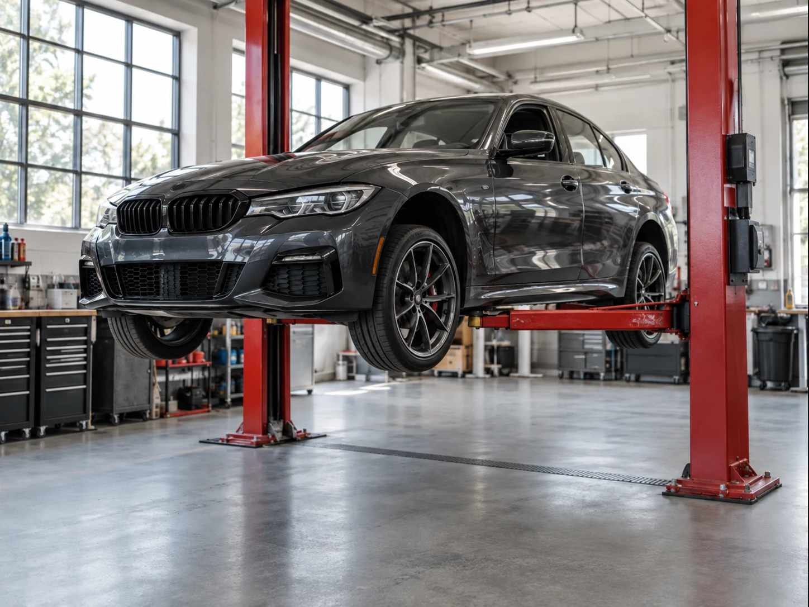
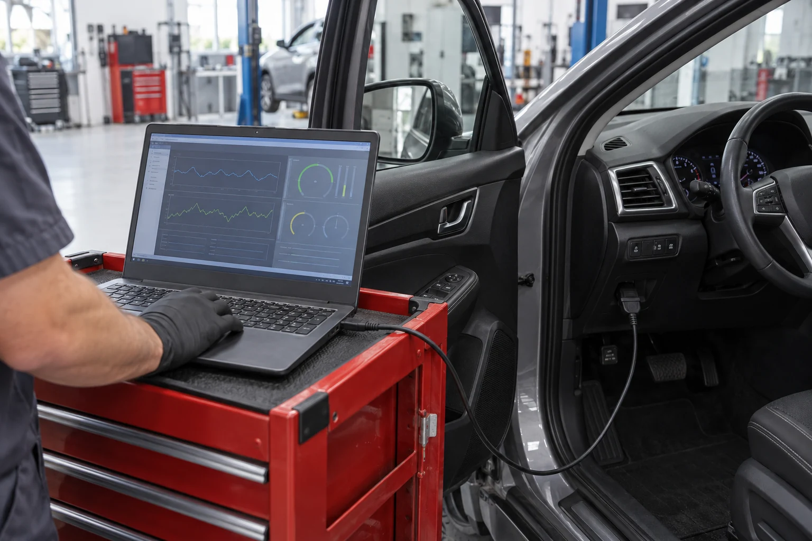
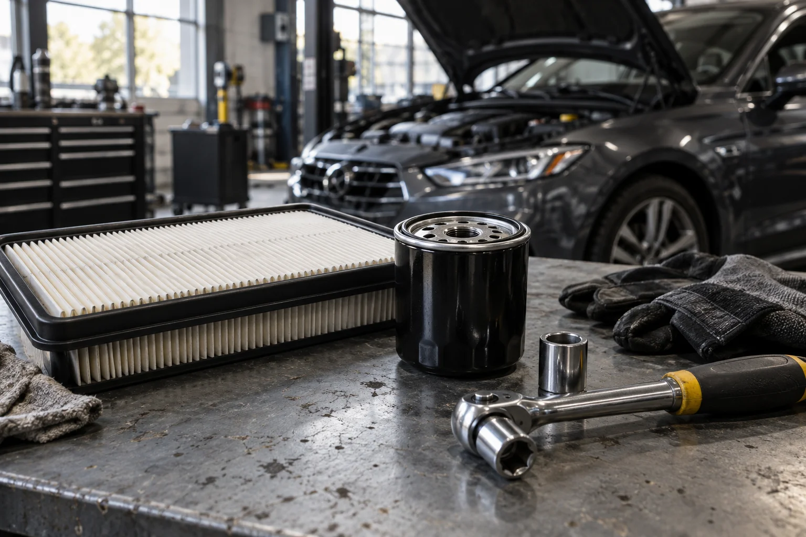

Вы рассказываете
Уточняем симптомы, пробег и историю ремонта. Обсуждаем, какие проверки нужны.
Автосервис в Москве
Ежедневно, 08:00–20:00
Обслуживаем и ремонтируем автомобили.
Мастер объяснит причину поломки и согласует стоимость до начала работ.

Вы обсуждаете с мастером причину поломки, нужные детали и срок ремонта.
Обслуживание по регламенту
Масло, фильтры и жидкости
Ремонт по результатам проверки
Ходовая, тормоза и двигатель
Условия обслуживания приведены для макета. Владелец подтвердит их перед запуском.
Мастер покажет, что нужно проверить, и обсудит с вами план работ.
Мастер проверит результат и расскажет, на что обратить внимание при следующем ТО.
Сначала обсудим.
Затем отремонтируем.
Сроки и условия гарантии нужно подтвердить для конкретных работ.
Расскажите, когда вы замечаете стук, вибрацию или горящий индикатор неисправности. Мастер учтёт ваши наблюдения при диагностике.

Уточняем симптомы, пробег и историю ремонта. Обсуждаем, какие проверки нужны.
Осматривает автомобиль на подъёмнике. Подключает сканер и проверяет узлы, которые могут быть причиной неисправности.
Обсуждаем причину неисправности, список деталей, стоимость и срок ремонта.
Выполняет работы, проверяет результат и даёт рекомендации по дальнейшему обслуживанию.
Скидка на работы по замене масла и фильтров при первом визите. Мастер укажет стоимость запчастей и жидкостей отдельной строкой в смете.

Осмотр ходовой, тормозов и проверка уровня жидкостей.
1 500 ₽
Предложения приведены для макета. Владелец подтвердит условия и срок действия перед публикацией. Скидки не суммируются.
Москва. Ежедневно с 08:00 до 20:00.
Перед визитом согласуйте время с мастером.
+7 (495) 000-00-00
Демонстрационный номер. Не используйте для звонков.
Почта для связи
Уточняется
Телефон и почту нужно заменить на действующие контакты сервиса.
Выберите нужные работы. Мастер уточнит стоимость с учётом модели автомобиля и результатов осмотра.
В макете приведены примерные цены на работы. Запчасти и расходные материалы в стоимость не входят.
Меняем масло, фильтры и технические жидкости по регламенту производителя.
Считываем коды ошибок, проверяем параметры работы узлов и ищем причину неисправности.
Проверяем люфты и состояние деталей. Меняем изношенные элементы ходовой.
Проверяем колодки, диски и суппорты. Обслуживаем гидравлическую систему.
Устраняем течи, меняем приводные ремни и обслуживаем трансмиссию.
Меняем шины, балансируем колёса и регулируем углы их установки.
Выберите услугу или опишите симптомы. Укажите имя и телефон для обратной связи.
Это демонстрационная форма. Вы можете заполнить и проверить заявку в своём браузере. Автосервис её не получит. Для проверки используйте вымышленные данные.
Марку, модель и комментарий можно не указывать. Не вводите паспортные данные, VIN и государственный номер.